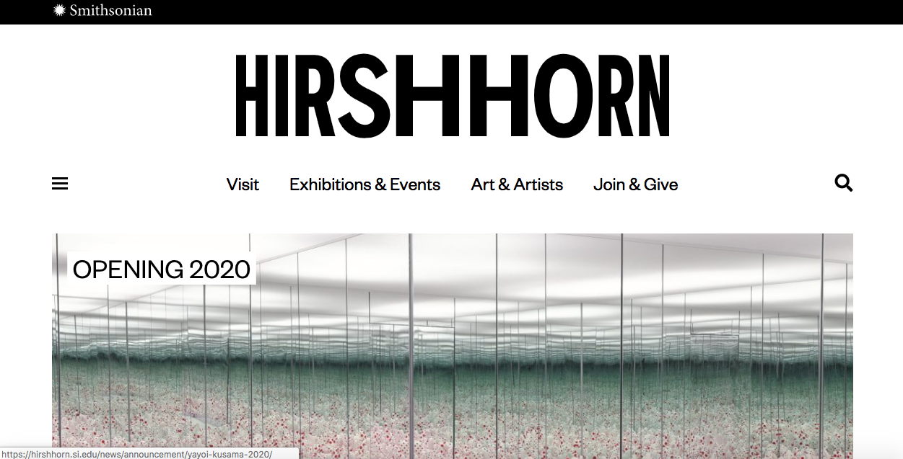
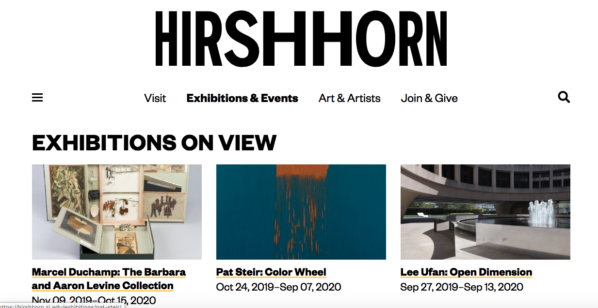
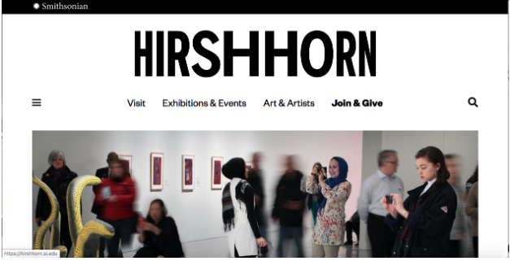
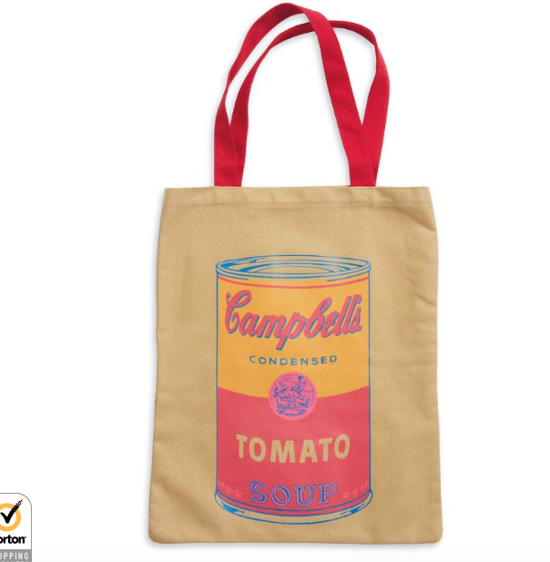
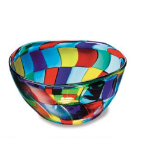
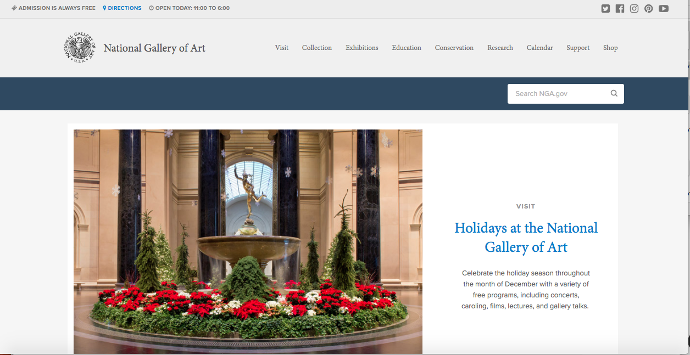
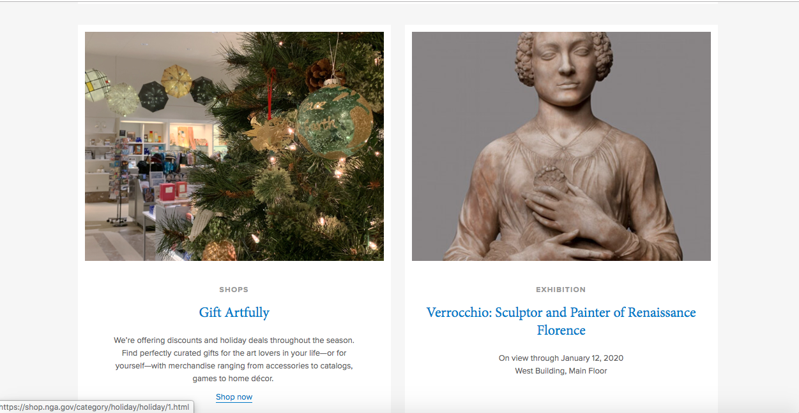
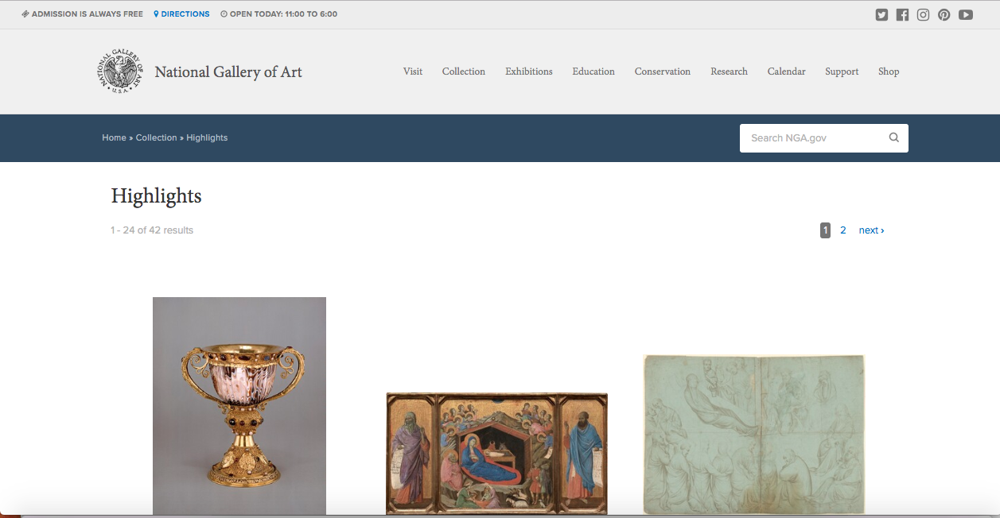
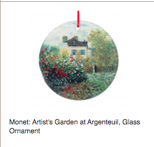
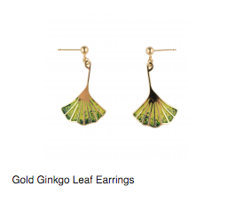

DC Art
12-01-19
Hirshhorn
[map]
The map that was available online does not provide much information about the collection. The maps only show the basic shape of the museum and the types of spaces. No clues for what type of museum are given except for the unorthodox shape and statue gardens which show it’s an art museum. The labels are vague and broad so it would be impossible to locate a work of art based on these maps alone. Still, the map is very simple so people who are visually impaired should have no problem understanding it. I hope that the in-person maps have much more detail. This maps may seem like terrible design, but I believe that their purpose is not for the average visitor who would get a real map when they visited but a wealthy company or individual who are looking for a space to rent and are most interested in space and size of the museum. In that context, the maps succeed. The font is sans-serif.

The function of this design is to show the name of the museum and express what the museum is about. The abstract/modern art and the curved title (which demonstrates the shape of the museum) does this perfectly, though I would prefer that the entire work of artwork would appear on the screen. The label of the artwork which is at the bottom left only appears when you scroll down and though the label is clear, I would like the label to appear as soon as you load the page without any scrolling. The fonts are consistent with the map.

The exhibition page’s function is to show what the current exhibitions are. The design does this in a clear and visually appealing way. The exhibitions shown show a good example of what type of works are at this museum (works that are abstract and modern). The fonts are consistent with the map and other parts of the webpage. The works are copped but you can see enough of them to not be confused and the labels below are descriptive.

This is the join and give page which is meant to give information about donating and getting a membership. However, the design is very poor because there is no title and information available when you click. There is only an image that though shows that the Hirshhorn is an important museum, fails to give information on donating or getting a membership. The fonts are consistent though. The artwork here is not labeled nor is what gallery this is labeled. The image itself doesn’t fully appear when loaded.

I choose this work of art because it is something that I may actually buy because I feel like it represents a very important part of American art history. The designer had to copy Andy Warhol’s print and then create a bag that matched his design.

I choose this design because I feel like it is very practical and can be used very well. To make this, the designer had to be inspired by the Hirshhorn collection in order to make sure the work fitted in with the other works in the gift store and didn’t seem like just a random bowl.
NGA
[map]
This map is very confusing and impossible to read. I have 20 20 vision and I cannot understand it so I have no doubt that people who are visually impaired will have an even harder time. It is even worse that to properly understand where everything is you need to use the color guide so it is inaccessible to people who have color blindness. There is simply too much information in too small of a space. Still, if I look closely I can decipher where a work of art is based on what type of art it is. Besides showing the berth of what types of art are here, very little about the mood or vibe of the museum is communicated.

The goal of this page is to introduce the museum to the viewers. Though navigation, name, and basic information are clearly given. There is little about what type of museum it is. The design is very simple and does not reveal much about what type of museum it is though the museum could be seen as being traditional. The font is not consistent with the map at all. Here there are both sans-serif and serif. All fonts are legible. The work of art is not cropped or labeled and it is very hard to tell what you are looking at besides it being a statue.

This part of the webpage communicates what the museum has to offer. It does this very well by having well-written titles, descriptions and well-chosen images. The fonts are consistent with the main page. The design is simple and formal, which though doesn’t tell much about the museum it does show how traditional this museum is. The work of art shown is cropped, but it is clearly labeled and it is clear about what is being shown.

This page’s goal is to show a bit more about what this museum is about. The design doesn’t communicate much about the “style” of this museum expect perhaps a formal nature. However, the picture of the work do show the diversity of the museum’s collection. The use of whitespace cuts off the titles and bottom parts of the museum which isn’t very good at all. (None of the images are actually cropped though.) The fonts are consistent with the other pages of the web site.

I chose this because I liked how it represented Monet’s work and I may actually buy it if I had the chance and the money. The designer had to pick a representative work of Monet’s, crop it, and pick an ornament type that best fits the selection.

I chose this because I was curious about what jewelry the NGA was selling and this was one of my favorites. The designer had to look at the Asian art the NGA had in order to create a design that was accurately inspired and representative of that collection.